HR · 사업장 근로자를 위한
휴가 신청부터 결재까지,
휴가 신청부터 결재까지,
캘린더 하나로 끝
구성원의 근무와 휴가가 한 캘린더에 모입니다. 연차·병가·경조사는 정책대로 자동 차감되고, 야근과 휴일근무는 전자결재로 미리 보고합니다.
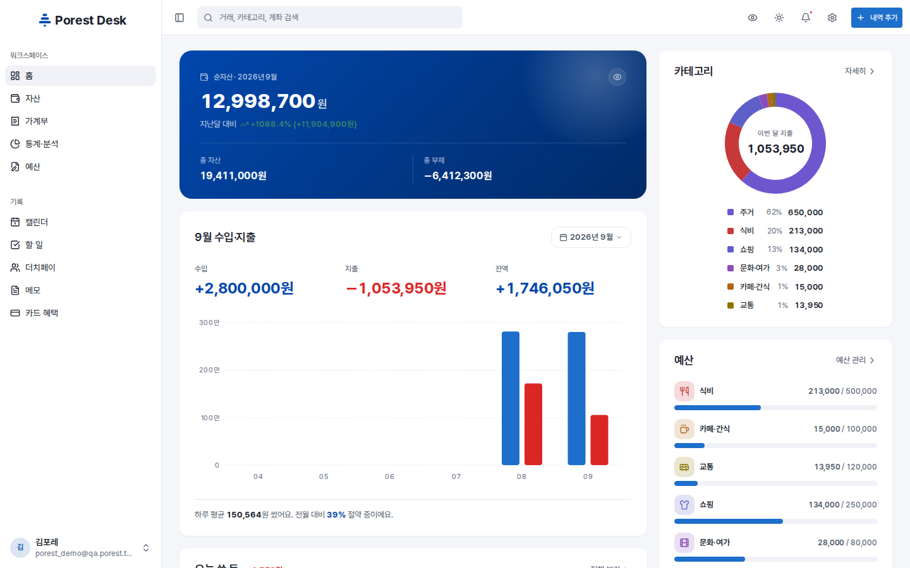
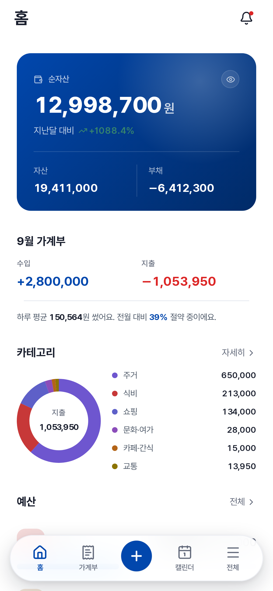
구성원의 근무와 휴가가 한 캘린더에 모입니다. 연차·병가·경조사는 정책대로 자동 차감되고, 야근과 휴일근무는 전자결재로 미리 보고합니다.
누가 언제 쉬는지, 얼마나 남았는지, 결재는 어디까지 갔는지. 물어보지 않아도 화면에 있습니다.
계좌·카드·적금·투자·대출을 한 곳에 놓으면 순자산이 계산됩니다. 카드값은 결제 계좌에서 빠지고, 마이너스 통장은 부호가 알아서 정해집니다.
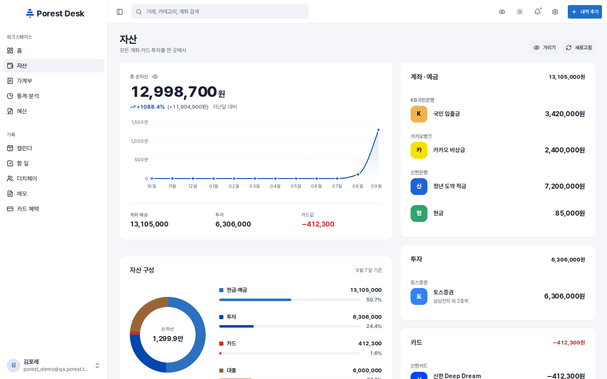
점심 한 끼도, 월세도, 급여도 같은 곳에 적습니다. 날짜별로 묶이고 카테고리별로 나뉘고, 이번 달 어디에 가장 많이 썼는지 바로 보입니다.
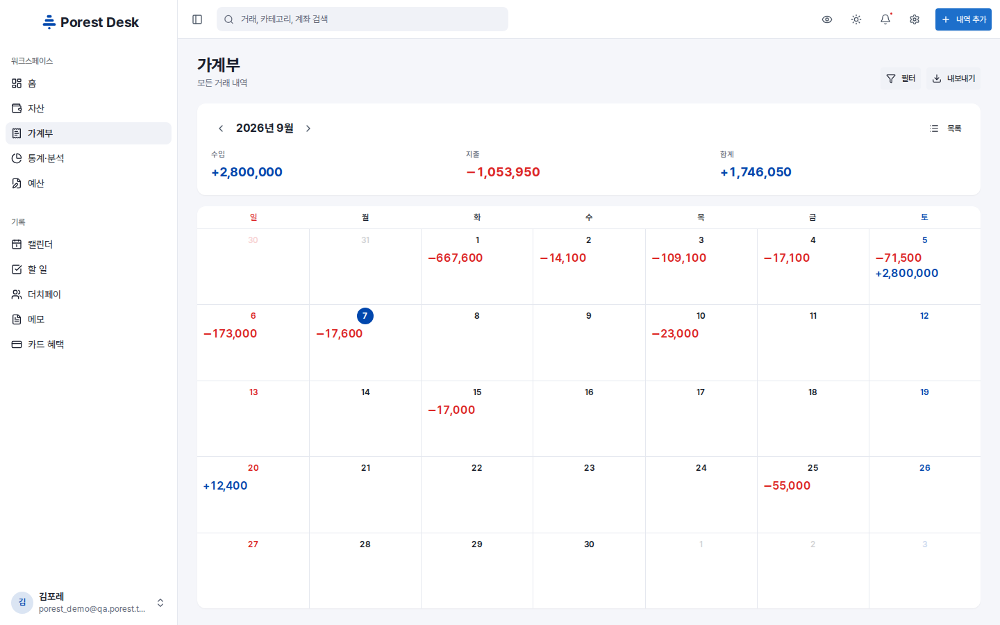
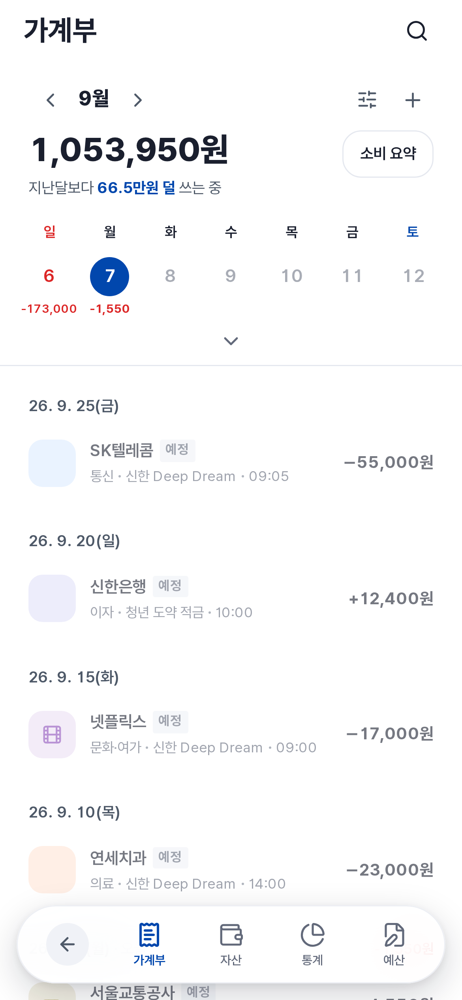
전체 상한과 카테고리별 예산을 두면 지출 페이스가 계산됩니다. 남은 일수로 나눈 하루 권장 지출까지 알려 주니, 월말에 놀랄 일이 없습니다.
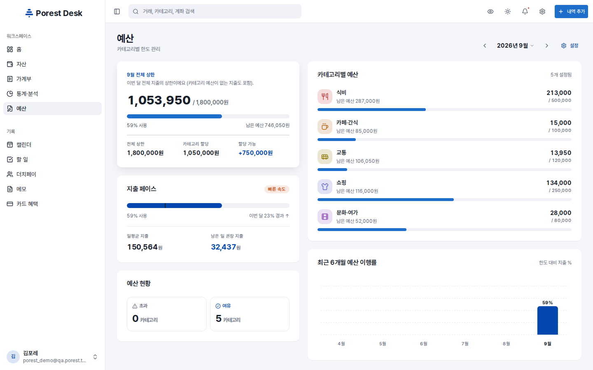
카테고리별 비율, 많이 쓴 가맹점, 요일·시간대 지출 패턴. 지난달과 비교하면 습관이 드러납니다.
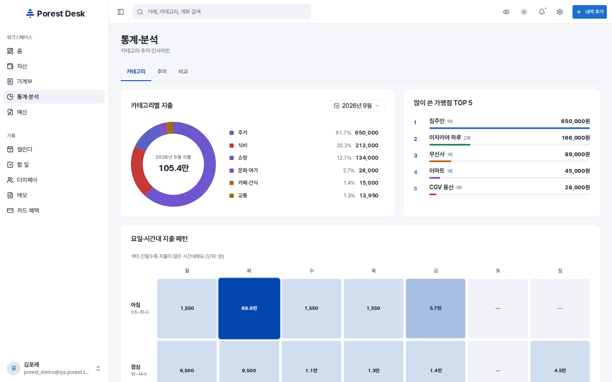
라벨로 색을 나누고, 반복 일정은 규칙으로 한 번만. 공휴일은 자동으로 들어오고, 알림은 원하는 시간 전에 옵니다.
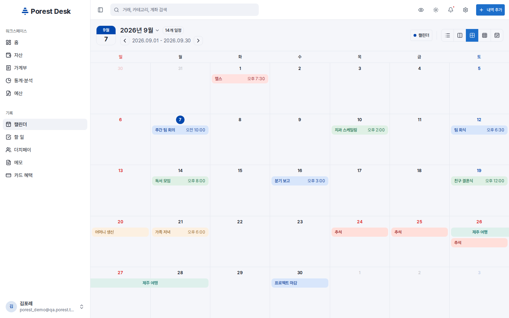
할 일에 태그와 우선순위를 달면 오늘·이번 주로 걸러 보여 줍니다. 태그별 진행률과 우선순위 분포가 옆에 붙어 있어 무엇부터 할지 정하기 쉽습니다.
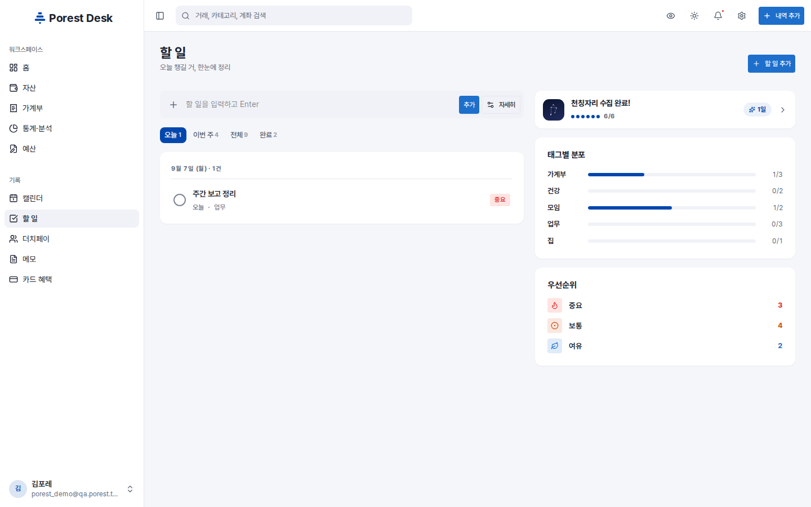
모임 비용을 인원수로 나누거나 금액을 직접 정하고, 누가 냈고 누가 보냈는지 진행률로 봅니다. 자주 정산하는 친구는 다음에 바로 부릅니다.
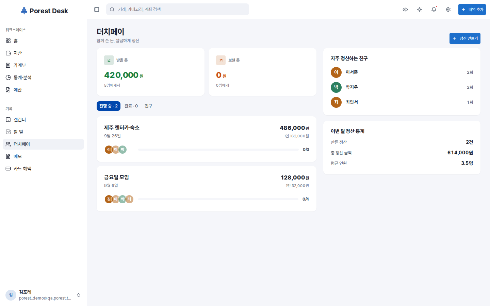
폴더로 나누고 색으로 구분하고 검색으로 찾습니다. 장보기 목록부터 분기 보고 요점까지, 길이에 상관없이 같은 자리에 둡니다.
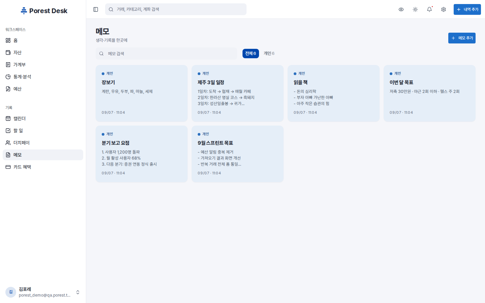
Android 앱과 모바일 웹은 같은 화면, 같은 데이터입니다. 밖에서 적고 책상에서 정리하세요.
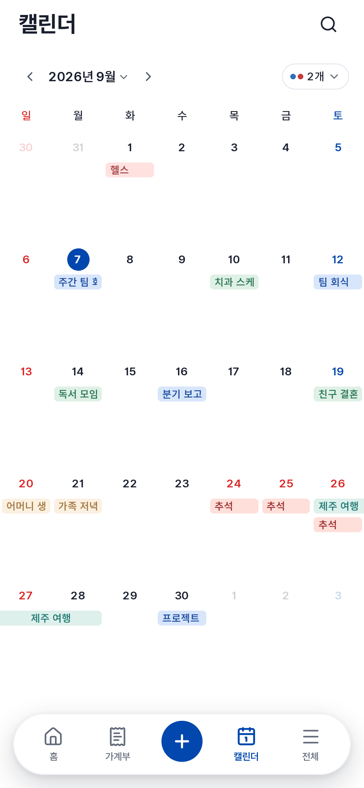

POREST 는 사람(People)이 모여 숲(Forest)처럼 자라나는 조직 생태계를 설계하는 HR 플랫폼에서 출발했습니다. 지금은 개인의 하루를 정리하는 Desk 와, 두 서비스를 하나의 계정으로 잇는 SSO 까지 한 숲 안에서 자랍니다.
한 번 뽑고 끝내지 않습니다. 구축하고 가꾸어 나가는 HR 을 만듭니다.
느낌이 아니라 객관적 지표로 성장을 설계합니다.
서로 다른 사람이 모여 집단 지성이 되는 조직 문화를 지향합니다.
POREST 계정 하나로 모든 서비스에 들어갑니다. 서비스를 오갈 때 다시 묻지 않고, 로그아웃하면 그 기기의 접속을 바로 끊습니다.